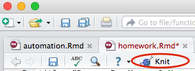

Instructions: You should write your homework assignments as an R markdown document. Use the knit button in RStudio to produce a stand-alone html document containing all your R code, as well as the results (including graphs) produced by your code. Submit this single .html file on blackboard. Be sure that your document includes headers indicating which question you are answering (#1, #2, etc). Note: You will have to zip your assignment a .zip file to upload it to Blackboard, as Blackboard doesn’t like .html files.
This cheatsheet is helpful for using R markdown.

- Indexing Vectors
- Start with this vector of nouns.
nouns <- c("apple", "flower", "insect", "lettuce", "knife", "dog", "cloud", "person", "cabinet", "flower" )
- use the
length() function to display the number of elements in nouns
- use indexing to create a new vector consisting of the first 4 elements of
nouns.
- use indexing to create a new vector consisting of only the last 8 elements of
nouns.
- use indexing to create a new vector of the 1st, 3rd through 6th, and 10th elements of
nouns (the length of the resulting vector should be 6)
- create a new vector with the elements of
nouns in reverse order.
- Using functions
- Use the
rnorm function to create a vector called grades representing student grades from an Anthropology 101 course with 200 students, mean grade of 68%, and a standard deviation of 10. Hint: remember you can look up help for a function like this: ?rnorm
- Apply a curve of 7% to the class grades (just add 7% to each student’s grade). Save this to a new variable called
curvedgrades
- Use the appropriate functions to calculate the standard deviation, minimum, maximum, and mean of the curved grades.
- Make a histogram of
curvedgrades using the hist() function.
- Organizing data
- Download this excel spreadsheet
- This spreadsheet is not in a form that can be read into R. Think about why not, keeping in mind this information on data input you learned in the introduction to R lecture.
- Re-organize the excel sheet to make it readable in R. Use excel to export it as a text file (or .csv) and read in the data into R. Make sure that the R markdown file you turn in prints out the dataframe, so I can see that you succesfully completed this step.
- Describe in words at least two major things that were wrong (from the perspective of an R user) with the original organization of this data file.
- Manipulation
- Read in the file http://hompal-stats.wabarr.com/datasets/gorilla_sizes.txt as a dataframe
- Add a new column called containing a factor called
sex that that encodes the specimens sex. Hint: you can use the grep() function to determine the sex from the specimen number, and use the factor() function to turn a vector into a factor.
- Produce a simple table showing the counts of males and females. Hint: check out the
table() function
- Use the
hist() function to make a plot of the natural log of the skull measurements.
- Use logical indexing (discused in the in-class demo) to subset the dataframe to include only individuals with skull measurements greater than 250 and save your results to a variable.
- Use the
subset() function to subset the dataframe to include only individuals with measurements less than 250, and save your results to another variable.